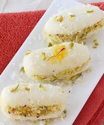

🍬 Cham Cham

Ingredients
- 1 cup chhena (fresh paneer)
- 1/4 cup all-purpose flour
- 1/4 tsp baking soda
- 1/4 tsp cardamom powder
- 1/2 cup sugar
- 2 cups water
- 1 tsp rose water (optional)
- 1 tsp ghee (for greasing)
Instructions
- In a mixing bowl, knead the chhena until smooth. Add all-purpose flour, baking soda, and cardamom powder. Knead again for a minute until it forms a soft dough.
- Divide the dough into small portions and shape each portion into a smooth oval or cylindrical shape.
- Bring 2 cups of water to a boil in a deep pan and add sugar to make a syrup. Stir until the sugar dissolves completely.
- Once the syrup is ready, gently drop the shaped cham chams into the syrup. Let them cook in the syrup on medium heat for about 10-15 minutes, ensuring they puff up and absorb the sugar syrup.
- Remove the cham chams from the syrup and let them cool down.
- Optionally, you can add rose water to the syrup for a fragrant aroma.
- Serve chilled or at room temperature.
Serve With
- Enjoy it as a sweet treat!
💡 Tip: You can add saffron strands to the sugar syrup for added flavor and color.